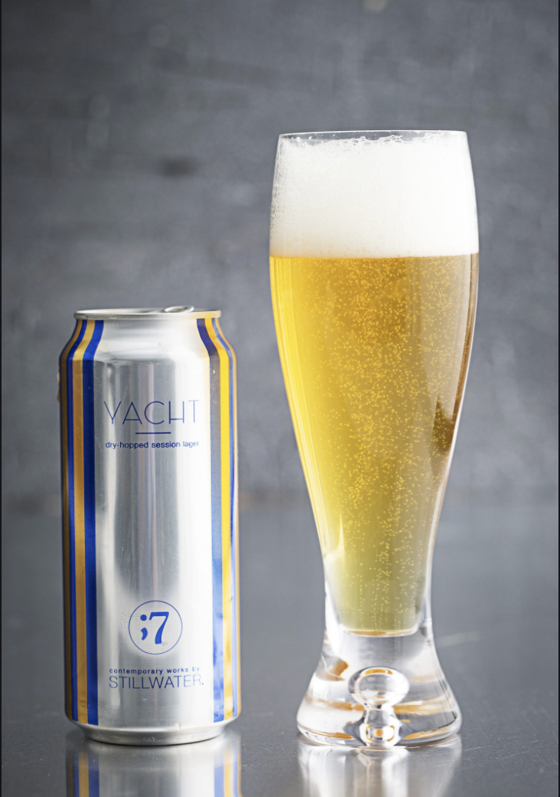

HOME
LAGER
Yacht Lager
Still Water Artisan Ales
The light and refreshing pilsner malt body delivers an abundance of floral, spice, and grass driven hop flavors and aroma. Perfect for those luxurious cruises through the Caribbean.
Notes: Beers are brewed at / by another brewery. Stillwater Artisanal is the nomadic 'gypsy' brewing venture headed by Baltimore native, Brian Strumke. A former internationally renowned techno
Check out their site HERE 